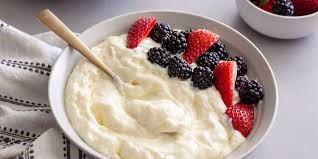
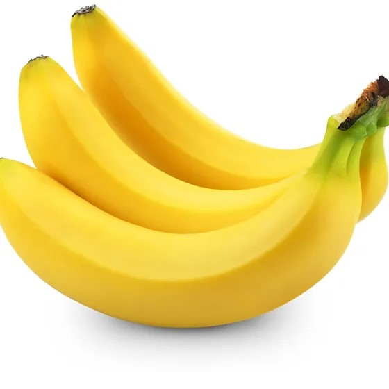

Yogurt

Yogurt is a food synthesized by the fermentation of milk. The fermentation of milk is generally carried
out using bacterial cultures, also known as yogurt cultures. The cultures that are commonly used for
the preparation of yogurt are Streptococcus thermophilus and Lactobacillus delbrueckii subsp.
The following are its benefits
Yogurt contains probiotics that can help prevent the common cold and other illnesses
Yogurt can help with digestion and reduce inflammation
Yogurt can help preserve muscle mass while promoting fat loss
Yogurt is a concentrated source of nutrients, including protein, calcium, zinc, B vitamins, and vitamin D
Yogurt contains vitamin A, which helps maintain healthy skin by rebuilding tissues and protecting them
For more information click the link given below
More about Yogurt
Banana

Banana is a very popular fruit due to its low price and high nutritive value. It is consumed in fresh or cooked
form both as ripe and raw fruit. Banana is a rich source of carbohydrate and is rich in vitamins particularly
vitamin B. It is also a good source of potassium, phosphorus, calcium and magnesium.
The following are its benefits
Helps maintain fluid levels, regulate blood pressure, and improve muscle function
Helps control blood sugar, lower cholesterol, and maintain a healthy weight. A medium banana contains about 3 grams of fiber
Helps with metabolism, brain development, and immune system health
Helps control blood pressure and blood sugar, keep bones strong, and boost the immune system
Good for vision and may help protect against cancer
For more information click the link given below
More about Bananas